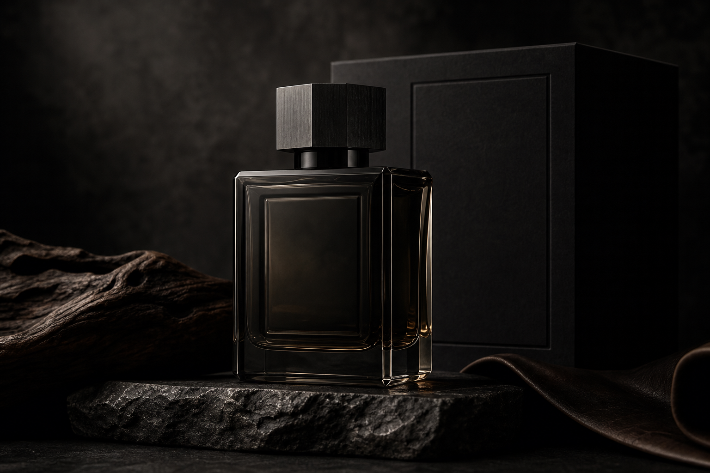
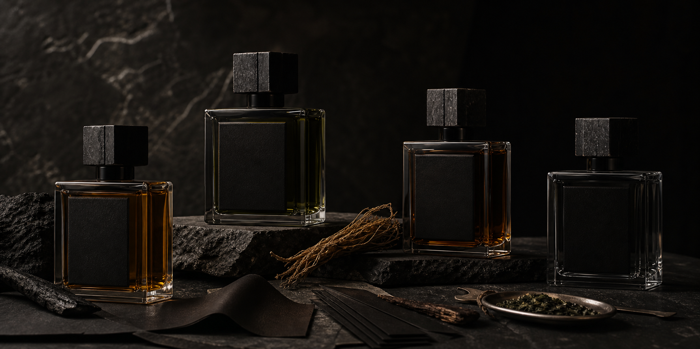

Black Cedar
Charred cedar / cypress resin / Haitian vetiver
Dry wood, cold smoke, and a mineral base. The most direct signature in the line.
Extrait de Parfum / Men 30-50
Rare masculine fragrances built like private objects: smoked woods, mineral shadow, restrained leather, and a deliberate trail that stays close to the wearer.

Obsidian Atelier composes extrait fragrances in small edited formulas, built around dry materials with physical presence: cedar, vetiver, birch smoke, ink, black tea, leather, labdanum, and mineral amber.
The house exists for the space between tailoring and ritual. Each scent is direct in structure, close in projection, and designed to become part of a man's daily objects rather than a public performance.
The line is intentionally narrow. Each formula owns a different register of masculine restraint: smoke, paper, leather, and stone.
Charred cedar / cypress resin / Haitian vetiver
Dry wood, cold smoke, and a mineral base. The most direct signature in the line.
Birch tar / incense resin / mineral amber
Darker and colder, with a metallic edge and a slow resinous drydown.
Black tea / suede accord / dry iris
Quiet, polished, and intellectual. Leather without sweetness or gloss.
Galbanum / mate leaf / oakmoss
Green, bitter, and tailored. Built for men who dislike obvious freshness.

Each extrait is built in three movements: a controlled opening, a textured material center, and a dry architectural base that holds for hours without turning cosmetic.
Four permanent formulas keep the house legible and avoid inventory masquerading as choice.
Higher concentration supports texture, wear, and close projection without loud diffusion.
Each composition is anchored by recognizable woods, resins, mosses, and leather facets.
The bottle uses weight, dark glass, and a squared cap to feel collected, not decorated.
Purchase is intentionally simple: one 50 ml bottle, one discovery set, or a short inquiry if you want the house to recommend a formula from your current wardrobe and use case.